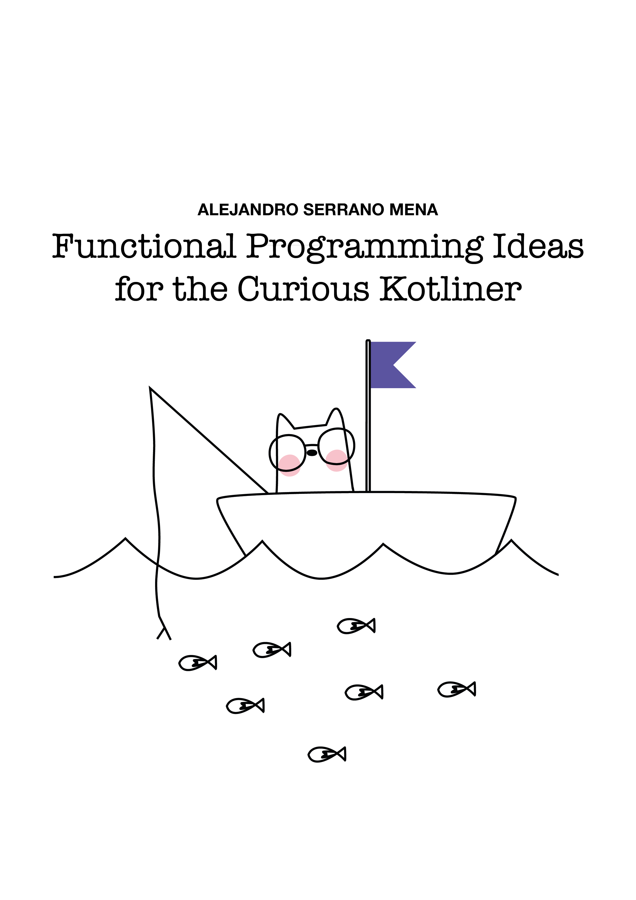

class: center, middle, title-slide count: false # **Safe concurrency** ## Resources and resilience <br /> .less-line-height[ Alejandro Serrano @ Kotlin Meetup .grey[🦠@trupill - 🏁 serranofp.com] ] --- # 🗂️ Safe concurrency Ensuring that code **keeps working** (maybe in degraded mode) in the face of problems -- It gets harder as systems grow: - Concurrent workers - Shared resources -- Arrow provides **high-level** tools for this --- # 🧬 Coroutines Coroutines are **suspendable** computations - Built in the Kotlin language -- .code70[ ```kotlin interface UserRepository { // coroutines are marked with 'suspend' suspend fun getByName(name: String): User? suspend fun User.friends(): List<UserId> } ``` ] --- # 🧬 Coroutines and concurrency Coroutines are used as a basis for **concurrency** - Suspendable computations are _scheduled_ - Co-operative lightweight multi-tasking > This is why `kotlinx.coroutines` is a library --- # 🧬 Coroutines and concurrency Operations for concurrent actions live in `CoroutineScope` (or extend it) .code60[ ```kotlin fun <T> CoroutineScope.async( context: CoroutineContext = EmptyCoroutineContext, start: CoroutineStart = CoroutineStart.DEFAULT, block: suspend CoroutineScope.() -> T ): Deferred<T> ``` ] No mention of coroutines contexts today --- # ⛖ Two tasks in parallel .code60[ ```kotlin suspend fun UserRepo.getUserInfo(name: String): UserInfo? = coroutineScope { val name = getByName(name) ?: return null val avatarTask = async { download(user.avatarUrl) } val friendsTask = async { user.friends().map { getById(it).name } } val avatar = avatarTask.await() val friendNames = friendsTask.await() UserInfo(user.id, name, avatar, friendNames) } ``` ] -- ☢️ This only considers the _success_ path --- # 🏁 Finish modes for coroutines ✅ .grey[**Success**] ⚡ **Exception** - Problem makes it impossible to complete ⌠**Cancellation** - Some job is no longer needed - Implemented via `CancellationException` --- # 🏁 Finish modes for coroutines ✅ .grey[**Success**] ⚡ **Exception** ⌠**Cancellation** We want to launch two jobs and <br /> wait only for the first one to finish - If one succeeds or throws an exception <br /> ⟹ the other should be cancelled - If the calling computation is cancelled <br /> ⟹ both jobs should be cancelled - What happens if both throw an exception? - Or that exception is thrown while cancelling? - ... --- # 🏳️ Introducing Arrow Fx High-level functions for easier concurrency .code60[ ```kotlin suspend fun UserRepo.getUserInfo(name: String): UserInfo? = getByName(name)?.let { user -> parZip( { download(user.avatarUrl) }, { user.friends().parMap { getById(it).name } } ) { avatar, friendNames -> UserInfo(user.id, name, avatar, friendNames) } } ``` ] --- # 🏳️ Introducing Arrow Fx High-level functions for easier concurrency .code60[ ```kotlin suspend fun UserRepo.getUserInfo(name: String): UserInfo? = nullable { val user = getByName(name).bind() parZip( { download(user.avatarUrl) }, { user.friends().parMap { getById(it).name } } ) { avatar, friendNames -> UserInfo(name, avatar, friendNames) } } ``` ] Even nicer with Arrow's typed errors! 🤩 --- # ⚡ Errors vs. exceptions _Isn't Arrow all about Functional Programming?_ <br /> _And don't you all hate exceptions?_ -- Exceptions are for **exceptional** cases - Outside of the regular operation - Resolution depends on some third party -- Exceptions are **not** for _domain_ errors - Validation errors - User cannot be found in the database --- # ⛓️ Service is (temporarily) down You cannot contact some other service - Network connection is lost <br /> (happens quite often in mobile) - Microservice is being updated But you expect it to be back soon(ish) > Bring Arrow Resilience in! --- # ↩️ Retries The simplest resilience pattern is just **try again** .code70[ ```kotlin suspend fun download(url: Url): ByteArray = Schedule.recurs(5).retry { url.readBytes() } ``` ] -- - `Schedule` describes the policy - Try at most 5 times, or throw - `retry` uses that policy to perform the action --- # 🪅 Separation of concerns Avoid the risk of contaminating _what to do_ with accidental complexity of _handling errors_ .code70[ ```kotlin suspend fun download(url: Url): ByteArray = for (attempt in 1 .. MAX_ATTEMPTS) { try { url.readBytes() } catch (e: Exception) { if (attempt == MAX_ATTEMPTS) throw e } } ``` ] --- # 🧮 More complex policies .margin-top[ - **Constant** delay between attempts - **Increased** delay between attempts - Linear backoff - Exponential backoff - **Jittering** adds random noise to the delay - **Conditions** to stop or continue ] Check `Schedule`'s companion object --- # 😵‍💫 Overloads Imagine the following scenario: - Clients talk to a server each 1 s. on average - They implement a retry strategy - Server goes down for 5 minutes -- Server is flooded with 300 requests at once! --- # 🪢 Circuit breaker In _Open_ state all requests fail (quickly) In _Half Open_ only the **test** request is allowed - If successful, back to _Closed_ state --- # 🪢 Circuit breaker .code70[ ```kotlin // 1️⃣ define the strategy val circuitBreaker = CircuitBreaker( openingStrategy = OpeningStrategy.Count(2), resetTimeout = 2.seconds, exponentialBackoffFactor = 1.2, maxResetTimeout = 60.seconds, ) // 2️⃣ protect the computation circuitBreaker.protectOrThrow { url.download() } ``` ] --- # 🦾 More resilience patterns [_Cloud Design Patterns_](https://learn.microsoft.com/en-us/azure/architecture/patterns/) (in Azure Docs) <br /> contains a great repository of patterns - Bulkhead - Rate limiter - ... Libraries like Resilience4j implement many --- # 🦾 More resilience patterns Libraries like Resilience4j implement many _Why use Arrow Resilience then?_ -- 1️⃣ Arrow is a Multiplatform (KMP) library - Native, iOS, JS, in addition to JVM 2️⃣ Arrow provides idiomatic APIs - Integration with the coroutine system --- # 🧰 Resource management Many external services require _preparation_ - Create and manage a connection - Dispose resources in an ordered manner - Share a common pool between workers -- ## Basic solutions in Kotlin .margin-top[ - `try`/`catch`/`finally` (inherited from Java) - `resource.use { ... }` ] --- # 🧰 Resource management .code70[ ```kotlin try { val config = CONFIG_FILE.inputStream() HttpClient().use { client -> // and now work with config and client! } } finally { config.close() } ``` ] -- - Deep nesting instead of linear code - Release is defined far from acquisition - Patterns cannot be easily abstracted --- # Concurrency 🤠resources **Structured** concurrency / resource mgmt. Scopes indicate computations start and end - Scope nesting replicates parent/child jobs - Parent awaits (and supervises) children --- # 🧱 Structured concurrency Entry point to "get" a `CoroutineScope` .code70[ ```kotlin suspend fun <R> coroutineScope( block: suspend CoroutineScope.() -> R ): R ``` ] Concurrency operations live in that class .code70[ ```kotlin // ↱ the parent scope fun <T> CoroutineScope.async(...): Deferred<T> fun CoroutineScope.cancel(...) ``` ] --- # 🣠Defining a resource .code60[ ```kotlin resourceScope { // using custom acquire/release val config = install({ CONFIG_FILE.inputStream() }) { f, _ -> f.close() } // using integration with AutoCloseable val client = autoCloseable { HttpClient() } // function with ResourceScope as receiver val db = DbConnectionFactory.get() // and now work with config, client, and db! } ``` ] -- 🪹 No nesting 🧩 Composable --- # 🧱 Structured resource management The scope defines when resources are released .code70[ ```kotlin resourceScope { } ``` ] Function with `ResourceScope` as receiver define acquisition and release of resources .code70[ ```kotlin fun ResourceScope.webClient(): HttpClient ``` ] --- # Resources 🤠concurrency Let's acquire the resources _in parallel_ .code60[ ```kotlin resourceScope { val (config, httpClient, db) = parZip( { autoCloseable { CONFIG_FILE.inputStream() } }, { autoCloseable { HttpClient() } }, { DbConnectionFactory.get() } ) { file, client, db -> Module(config, httpClient, db) } // and now work with config, client, and db! } ``` ] -- Try writing this without these abstractions 🤯 --- # 🏁 SuspendApp Extends `Resource` with _graceful shutdown_ - Ensures all finalizers are run even when `SIGINT`/`SIGTERM` happen - Gives enough time for ordered exit Useful when scaling or replacing applications --- # 🏁 SuspendApp For CLI applications, just wrap the `main` .code70[ ```kotlin suspend fun main() = SuspendApp { resourceScope { val (config, httpClient, db) = ... // and now work with config, client, and db! ... } } ``` ] Integration with Ktor is also available --- # 🕸️ Distributed transactions Sequence of steps that succeed or fail as a unit - If they fail, we must roll back to the start - Those steps happen in _different machines_ -- ## Saga pattern .margin-top[ - Define for each step a _compensating action_ that "undoes" that action - When a step fails, run the compensating actions in reverse order ] --- # Resources ⚔️ sagas <table> <tr> <td> <b>Resources</b></td> <td><b>Sagas</b></td> </tr> <tr> <td colspan="2" style="padding-top: 10px;"><i>For each action we define...</i></td> </tr> <tr> <td> Finalizer</td> <td>Compensating action</td> </tr> <tr> <td colspan="2" style="padding-top: 10px;"><i>On success</i></td> </tr> <tr> <td style="padding-right: 20px;"> Run finalizers</td> <td>Do nothing</td> </tr> <tr> <td colspan="2" style="padding-top: 10px;"><i>On failure</i></td> </tr> <tr> <td> Run finalizers</td> <td>Run compensating actions</td> </tr> </table> --- # 🧱 Structured sagas .code70[ ```kotlin saga { // introduces the SagaScope saga({ // defines a single step Counter.increment() }) { // alongside its compensation Counter.decrement() } // each step is wrapped with 'saga' saga({ url.download(PATH) }) { PATH.delete() } ... } ``` ] --- # 🏁 Conclusion 0️⃣ Coroutines form a great substrate for managing computations -- 1️⃣ Separate description from execution - `Schedule`, `CircuitBreaker`, and other policies -- 2️⃣ Structure and scopes make our life easier - Runner introduces a `Scope` in the context - Operations live in that `Scope` --- # 📖 FP Ideas for the Curious Kotliner ## `leanpub.com/fp-ideas-kotlin` <table style="margin-top: 40px;"> <tr> <td style="vertical-align: top"></td> <td width="68%"> <ul style="margin-top: 5px"> <li>Modeling with <span class="remark-inline-code">data</span> + <span class="remark-inline-code">sealed</span></li> <li>Errors and validation</li> <li>Immutable data transformation (with optics)</li> <li><span class="remark-inline-code">suspend</span> and concurrency</li> </ul> </td> </tr> </table> --- class: center, middle, title-slide # 🙋 Questions and comments --- class: center, middle, title-slide # 🤩 It's been a pleasure